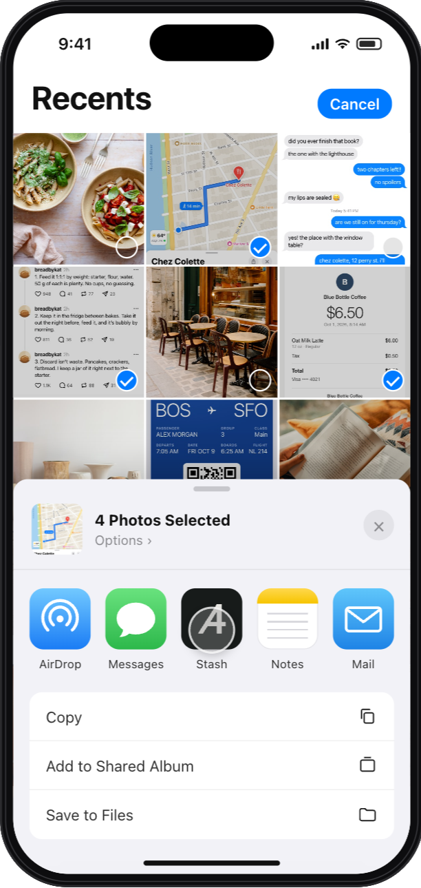

iphone app
Stash for iPhone is almost here.
Save from any app’s share sheet in one tap: screenshots, photos, links, articles, videos. Everything you’ve saved comes with you, and you can ask it anything.
It’s in beta now. You’ll get one email, on the day it’s in the App Store, and nothing else.

What it does
The same Stash as on the web and in Chrome, built for the moment you see something worth keeping.
Photos, Safari, TikTok, Instagram, Maps, the camera: tap Share, tap Stash, keep going. It saves in the background.
Stash pulls the words out of every screenshot, so a receipt or a boarding pass turns up when you search for what it says.
Everything you’ve saved, from anywhere, on your phone and searchable by what it’s about.
Ask in your own words and Stash answers from your saves, with the sources.